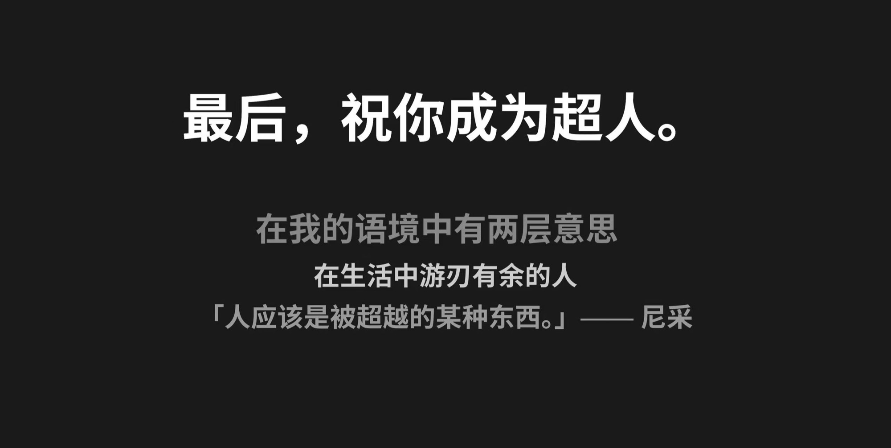

读了1000小时书，我才明白：读书救不了我
大家好，我是 Chester，我想成为更好的自己！
背景：记录于微信读书累计时长 1000 小时之际，对「读书有用」这件事的一点反思。
当时我最大的困惑是：读了那么多书，为什么依然过不好这一生？
问题的答案，不在于多么精巧动人、富含哲理的文字，而在于简单又真实的日常。
所以，我没办法从文字上给出答案——否则《道德经》早就让人人开悟了。
只有在特定的环境、特定的人、特定的话语、特定的时间点，才会真的让人开悟。
如果非要说一个法门，那就是：找到一个适合成长的环境。
环境大于知识，永远都是。 尤其对刚开始认知觉醒的人。
尽信书，不如无书。读书能让你过得更好，但真正让你过得更好的，从来不只是读书。
读书可以让生活更好，但不读书，也可以让生活很好。
尽信书，不如无书。
我慢慢觉得，阅读并不是解决一切烦恼的灵丹妙药。它是一味药，但不是包治百病的那一味。
读了一千小时，我最先放下的，是对读书的迷信。
人最大的烦恼，来自人际社交。
这种事，书本帮不上太多忙。它只能靠你躬身入局——放下心里的偏见，看见别人的可爱，先学会爱自己，再去爱别人。
也有人说，学会孤独地生活，就能过得更好了。会独处的人，确实能建立一种成熟的、无所求的关系。
但反过来也一样成立：只有能跟别人建立成熟关系的人，才真正忍得住孤独。
把孤独捧得太高，往往是一种误判。在这个讲家庭、讲人情的社会里，一味向往孤独，多半是黄粱一梦。
孤独和关系，是一体两面。你不能用其中一半，去逃避另一半。
To love, and be loved.
最棒的事，是从日常的生活里，感受到时时刻刻的美好。
诗和远方，不是非得到远方才能遇见。没有匹配的心理状态，远方永远只是个虚妄的幻觉。
远方，也可以从入世的嘈杂生活里长出来。
你不是缺一个远方，你是缺一双能从此刻看见美好的眼睛。
「行万里路，读万卷书」这句老话，我过了很久才咂摸出一点味道：一边学，一边入局做事。
书本里的理论词汇多如牛毛，绕口又迂腐。我更想说的，是一些实在的体验——多去碰一碰那些从没做过的事。
比如剧本杀。说实话挺无聊的，但那是完全陌生的场景，那种如坐针毡的感觉，胜过读十本书带来的生理反应。
再比如，学一门外语，补一个学历，去咖啡店看书，试着跟当权者说不，试着公开讲话，试着跑一次步。
陌生的难受，才是成长真正发生的地方。
有些道理，书里写一百遍，不如你亲自经历一遍。
有句话我很喜欢：我们最伟大的自由，就是我们对事物做出的反应。
我喃喃自语，想起这些年读过的书。
真要给读书打个比方——它就像大冬天，在大雪纷飞的草地上撒一泡尿。是有点特别，但也很不好意思。
有些话，我害臊得说不出口。
推荐阅读：去爱，也被爱——同样关于爱与被爱、从日常里感受美好，可作姊妹篇。
俗到极致即为雅，雅得过头便是俗——是谓雅俗共赏。
